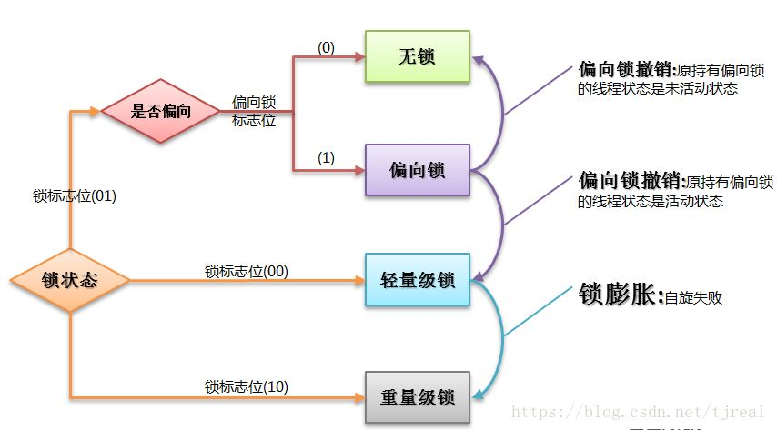

java内存常识
- 1.计数器、虚拟机栈、本地方法栈数据不共享；堆、方法区中数据共享。
- 2.常量池：用来存放字面量和符号引用，是方法区的一部分。运行时，也可以使用String.intern()方法将新的常量加入其中。
- 3.sun hotspot 把本地方法栈和虚拟机栈合二为一
- 4.jdk7时字符串常量从永久代移除，jdk8 永久代PermGen被MetaSpace取代，使用native内存，由虚拟机负责管理。
垃圾回收以及算法
OMM：调大内存参数，或者
引用计数法：当有一个地方使用计数值+1，失效时-1，为0时是不可再被引用的对象
缺点：循环引用时，某些对象将无法被回收掉
可达性分析算法：通过一系列的称为GCROOTS的对象作为起点，往下搜索（路径为引用链），当对象不与GC任何引用链相连时，则这些对象是不可达的。
GCROOTS对象包括：
- 1.虚拟机栈中引用的对象
- 2.方法区中静态属性或者常量引用的对象
- 3.本地方法引用的对象
垃圾收集算法：
- 1.标记清除（造成碎皮空间）
- 2.复制算法 (内存使用率50%)
- 3.标记整理 (比标记清除多一步，将存活对象移动到一端，清除其他的对象)
- 4.分代算法 (新生代：复制算法 老年代：标记清除或者标记整理)
垃圾收集器：

- ParNew(多线程 高吞吐)
- CMS(初始标记，并发标记（时间长），重新标记，并发清除（时间长）低延迟)
- G1(将整个堆划分为一个个小块，1-32M,RememberSet指向块的内存地址) 调整小 -XX:InitiatingHeapOccupancyPercent=45% 增多Minor GC频率，减少Full GC频率
- G1(将整个堆划分为一个个小块，1-32M,RememberSet指向块的内存地址) 调整小 -XX:InitiatingHeapOccupancyPercent=45% 增多Minor GC频率，减少Full GC频率
人员分组：3后台 1前台 1测试 30人左右 18 7 64 运维
JDK和JRE有什么区别？
- JDK:java开发工具包，提供了java开发环境和运行环境
- JRE:java运行环境
具体来说JDK包含了JRE，同时还包含了编译器，程序调试和分析工具
== 和 equals区别
==
- 基本类型：比较的是值是否相同
- 引用类型：比较的是引用是否相同
equals
本质上是==，比较引用，只不过String和Integer等重写了equals方法，把它变成了值比较
基本类型八种：byte short int long float double boolean
复杂数据类型：== 比较地址，重写之后equals 比较内容相同时也为true
两个对象的HashCode()相同，则equals也一定为true，对吗？
- 不对。”通话”和”重地”的HashCode相同，然而equals为false
final 在java中作用？
修饰最终类、最终方法、常量(必须初始化，初始化后值不能被修改)
java中操作字符串的类有哪些？各有什么区别？
操作字符串的类有：String、StringBuffer、StringBuilder
区别：String是不可变类，每次操作字符串都会生成新的String对象;另外两个可以在原有对象的基础上进行操作，所以经常改变的字符串最好不要使用String
StringBuffer 和 StringBuilder 最大的区别在于，StringBuffer是线程安全的，StringBuilder线程不安全，但是StringBuilder性能高于StringBuffer，单线程下推荐使用StringBuilder,多线程使用StringBuffer
String 类常用的方法都有哪些？
- indexOf():返回指定字符串的索引
- charAt():返回指定索引处的字符
- replace():字符串替换
- trim():去除字符串两端空白
- split():分割字符串，返回一个分割后的字符数组
- getBytes():返回字符串的byte类型数组
抽象类和普通类的区别？
- 普通类不能有抽象方法，抽象类可以有抽象方法
- 抽象类不能被直接实例化，普通类可以直接
接口和抽象类的区别？
- 接口被实现，抽象类被继承
- 类可以实现多个接口，但是只能继承一个类
- 接口中不能有main方法，抽象类中可以有
- 接口不能有构造放啊发，抽象类可以有
- 接口中方法默认使用public修饰，抽象类中的方法可以是任意修饰符
java io流分为几种？
- 按功能来分：输入流(input)、输出流(output)
- 按类型来分：字节流和字符流
- 两者区别：
- 字节流按8位 传输以字节为单位输入输出数据
- 字符流按16位传输以字节位单位输入输出数据
排序算法
1.冒泡排序
1 | /** |
2.插入排序
1 | /** |
3.选择排序
1 | /** |
方法重写和重载
- 重写
- ==两等两小一大==：方法名 参数列表相同 抛出异常、返回类型小于父类，修饰符大于父类
- 重载
- 发生在同一个类中
- 方法名相同 返回值类型相同
异常处理机制

- Error 和 Exception区别
- Error是Throwable子类，由虚拟机生成并抛出，包括动态链接失败，虚拟机错误等程序不需要处理
- Exception 分为检查异常和运行时异常，
-检查异常再编译时会被提示不通过，- Java.lang.ClassNotFoundException - Java.lang.NoSuchMetodException - java.io.IOException- 运行时是运行时候的异常
- ava.lang.ArithmeticException
- Java.lang.ArrayStoreExcetpion
- Java.lang.ClassCastException
- Java.lang.IndexOutOfBoundsException
- Java.lang.NullPointerException
- 运行时是运行时候的异常
BIO、NIO、AIO有什么区别？
- BIO：Block IO同步阻塞式IO，模式使用方便，并发处理能力低
- NIO：New IO 同步非阻塞IO，客户端和服务器通过Channel(通道)通讯，实现了多路复用
- AIO：Asynchronous IO是NIO升级，也叫NIO2，实现了异步非阻塞IO，异步IO的操作基于事件和回调机制
Collection 和 Collections 有什么区别？
- java.util.Collection是集合类的顶级接口；它提供了对集合对象进行基本操作的通用接口方法。
- Collections则是集合类的一个工具类/帮助类，提供了一系列的静态方法，用于对集合中元素进行排序，搜索以及线程安全等各种操作
List、Set、Map之间的区别是什么？

HashMap 和 Hashtable有什么区别？
- HashMap去掉了Hashtable的contains方法，但是加上了containsValue() 和 containsKey()方法
- Hashtable是同步的，而HashMap是非同步的，效率更高
- HashMap允许空键值，而Hashtable不允许
如何决定使用HashMap 还是 TreeMap？
- 需要频繁插入，删除，定位元素，使用HashMap
- 需要对一个有序的key集合进行遍历，TreeMap
HashMap的实现原理？
- HashMap概述:HashMap是基于Hash表Map接口的非同步实现，不保证有序、顺序恒久不变
- HashMap数据结构：最基本的结构两种，数组、模拟指针(引用)，数组加链表
- put元素过程：首先根据key的hashcode重新计算hash值，根据hash值得到数组中的下标，如果数组在该位置放了其他元素，那么在这个位置上的元素将以链表的形式存放，新加入的元素放在链头，如果数组中该位置没有元素，就直接将元素放到数组的该位置上
- JDK 1.8中对HashMap的实现做了优化，当链表中的节点数据超过八个之后，该链表转为红黑树来提高查询效率，从原来的O(n)到O(logn)
HashSet实现原理
- HashSet底层由HashMap实现
- HashSet的值存放在HashMap的key上
- HashMap的value统一为present
ArrayList 和 LinkedList 的区别是什么？
- ArrayList是数组结构，支持随机访问，而LinkedList的底层数据结构是双向循环链表，不支持随机访问。使用下表访问一个元素，ArrayList的时间复杂度是O(1),而LinkedList是O(n)
数组和List区别
- 数组可以存基本类型和对象，而ArrayList只能容纳对象
- 数组是指定大小的，而ArrayList是固定的
- 数组没有ArrayList那么多功能，比如addAll,removeAll和iterator
线程安全的集合有哪些？
- vetor:同步后的arraylist
- stack:堆栈类，先进后出
- hashtable
- enumeration:枚举
迭代器是什么？
迭代器是一种设计模式，它是一个对象，它可以遍历并选择序列中的对象，而开发人员不需要了解该学列的底层结构。迭代器通常被称”轻量级”对象，因为创建它的代价小
并行和并发有什么区别？
- 并行是指两个或者多个事件在同一时刻发生；而并发指两个或者多个事件在用以时间间隔发生
- 并行是不同实体上的多个事件，并发是在同一实体上的多个事件
线程和进程区别
- 进程是程序运行和资源分配的基本的单位，一个程序至少有一个进程，一个进程至少有一个线程
- 进程在执行过程中拥有独立的内存单元，而多个线程共享内存资源，减少切换次数
- 线程是cpu调度和分派的基本单位，是比程序更小的能独立运行的基本单位
创建线程的方法
①继承Thread类创建线程类
1 | class A extends Thread { |
②通过Runnable接口创建线程类
1 | class B implements Runnable{ |
③通过Callable和Future创建线程
1 | class C<v> implements Callable<v> { |
- 线程池
- newFixedThreadPool 固定大小的线程池 阻塞式队列LinkedBlockingQueue
- newSingleThreadExecutor 只有一个线程的线程池 LinkedBlockingQueue
- newCachedThreadPool 缓存线程池 默认存活60s，SynchronousQueue
- newScheduledThreadPool
Runnable 和 callable
- Runnable 接口中的run()方法的返回值是void，它做的事情知识纯粹地去执行run()方法中的代码而已
- Callable接口中的call方法是有返回值的，是一个泛型，和Future、FutureTask配合可以用来获取异步执行的结果
线程的状态
创建、就绪、运行、阻塞、死亡
sleep和wait有什么区别？
sleep():方法是线程类(Thread)的静态方法，让调用线程进入睡眠状态，不释放锁
wait():方法是Object类中的，当一个线程执行wait方法时，进入和一个该对象相关的等待池，释放锁
创建线程池的集中方式
①newFixedThreadPool(int nThreads)
②newCachedThreadPool()
③newSingleThreadExecutor
④newScheduledThreadPool(int corePoolSize)
- 线程池状态：Running ShutDown Stop Tidying Terminated
- 线程池中的执行方法submit() execute()区别
- 接收的参数不一样
- submit 有返回值，而execute没有
- submit 方便异常处理
如何保证线程安全
- 原子性：提供互斥访问，同一时刻只能有一个线程对数据进行操作
- 可见性：一个线程对主内存的修改可以及时地被其他线程看见
- 有序性：一个程序观察其他线程中的指令顺序，由于指令重排序，该观察结果一般杂乱无序
多线程锁升级原理
锁有四种状态：无状态锁，偏向锁，轻量锁，重量锁

自旋：
自旋是指某线程需要获取锁，但该锁已经被其他线程占用时，该线程不会被挂起，而是在不断的消耗CPU的时间，不停的试图获取锁。
偏向锁
引入偏向锁是为了在无多线程竞争的情况下尽量减少不必要的轻量级锁执行路径，因为轻量级锁的获取及释放依赖多次CAS原子指令，而偏向锁只需要在置换ThreadID的时候依赖一次CAS原子指令。
当只有一个线程去竞争锁的时候，我们不需要阻塞，也不需要自旋，因为只有一个线程在竞争，我们只要去判断该偏向锁中的ThreadID是否为当前线程即可。如果是就执行同步代码，不是就尝试使用CAS修改ThreadID，修改成功执行同步代码，不成功就将偏向锁升级成轻量锁。
轻量锁
获取轻量锁的过程与偏向锁不同，竞争锁的线程首先需要拷贝对象头中的Mark Word到帧栈的锁记录中。拷贝成功后使用CAS操作尝试将对象的Mark Word更新为指向当前线程的指针。如果这个更新动作成功了，那么这个线程就拥有了该对象的锁。如果更新失败，那么意味着有多个线程在竞争。
当竞争线程尝试占用轻量级锁失败多次之后（使用自旋）轻量级锁就会膨胀为重量级锁，重量级线程指针指向竞争线程，竞争线程也会阻塞，等待轻量级线程释放锁后唤醒他。
重量锁
重量级锁的加锁、解锁过程和轻量级锁差不多，区别是：竞争失败后，线程阻塞，释放锁后，唤醒阻塞的线程，不使用自旋锁，不会那么消耗CPU，所以重量级锁适合用在同步块执行时间长的情况下。
死锁
死锁由于锁之间嵌套造成的,四个必要条件
- 1.互斥使用，一个资源被一个线程使用时，别的线程不能使用
- 2.不可抢占，资源请求者不能从资源占有者手中抢夺资源
- 3.请求和保持，当资源请求者再请求其他的资源的同时，保持对原有资源的占有。
- 4.循环等待，即存在一个等待队列，P1占有P2的资源，P2占有P1的资源
解决办法: - 破坏‘请求和保持’：
- 所有进程在运行之前，必须一次性地申请在整个运行过程中所需的全部资源。
- 要求每个进程提出新的资源申请前，释放它所占有的资源。
- 破坏：‘不可抢占’
- 如果一个进程请求当前被另一个进程占有的一个资源，则操作系统可以抢占另一个进程，要求它释放资源。只有在任意两个进程的优先级都不相同的条件下，该方法才能预防死锁。
- 破坏“循环等待”条件：
- 将系统中的所有资源统一编号，进程可在任何时刻提出资源申请，但所有申请必须按照资源的编号顺序（升序）提出。这样做就能保证系统不出现死锁。
同步锁 synchronize底层实现原理
synchronized可以保证方法或者代码块在运行时，同一时刻只能有一个方法可以临界区，同时它还可以保证共享变量的内存可见性
- 普通同步方法，锁是当前实例对象
- 静态同步方法，锁是当前的class对象
- 同步方法块，锁是括号里面的对象
synchronized 和 volatile
- volatile本质是在告诉jvm当前变量在寄存器(工作内存)中的值不确定，需要从主内存中读取；synchronize锁定当前变量，只有当前线程可以当问该变量，其他线程被阻塞住
- volatile仅能使用在变量级别 synchronize可以使用在变量、方法、类
- volatile仅实现变量的修改可见性，不能保证原子性；而synchronized则都可以保证
- volatile不会造成线程的阻塞；synchronized会造成线程的阻塞
- volatile变量不会被编译器优化；synchronized标记的变量可以被编译器优化
synchronize 和Lock有什么区别
- 一个是关键字，一个是java类
- synchronized 无法判断是否获取锁的状态，Lock可以判断是否获取到锁
- synchronized 会自动释放锁，Lock需要在finally中释放锁，容易造成线程死锁
- synchronized 锁可重入，不可中断，非公平，而Lock锁可重入，可判断、可公平
- Lock锁适合大量同步的代码的同步问题，synchronized锁适合代码少量的同步问题
synchronize 和 ReentrantLock 区别
ReentrantLock扩展了synchronized
- ReentrantLock可以对锁的等待事件进行设置，这样就避免了死锁
- ReentrantLock可以获取各种锁的信息
- ReentrantLock可以灵活地实现多路通知
两者加锁机制不一样：- ReentrantLock底层调用的是Unsafe的park方法加锁
- synchronized操作对象头中的mark word信息进行加锁
atomic原理
- Atomic包中的类基本的特性就是多线程环境下，当多个线程同时对单个变量进行操作时，具有排他性，即当多个线程同时对该变量的值进行更新时，仅有一个线程能成功，而未成功的线程可以像自旋锁一样，继续尝试，一直等待执行成功
- sun.misc.Unsafe 这个类包含了大量的对C代码的操作，包括很多直接内存分配以及原子操作的调用
什么是反射
反射是指程序可以访问、检测和修改它本身状态或行为的一种能力
Java反射机制主要提供了以下功能：
- 在运行时判断任意一个对象所属的类
- 在运行时构造任意一个类的对象
- 在运行时判断任意一个类所具有的成员变量和方法
- 在运行时调用任意一个对象的方法
反射中一些方法的区别
- getFields() getDeclaredFields区别
- getFields()返回的是申明为public的属性，包括父类中定义的
- getDelaredFields() 返回指定类定义的所有定义的属性，不包括父类中的
反射创建实例的三种方式
1 | // 方式一 通过Class对象直接调用newInstance方法 |
Class.forName和ClassLoader.loadClass有什么区别
- 类初加载的过程分为：加载 连接 初始化
- Class.forNama(className,true,classloader) true表示loadClass之后必须初始化
- ClassLoader.loadClass(className,false)目标对象被装载后不进行连接，不会去执行静态块中的内容
什么是Java序列化？什么情况下需要序列化?
简单的说就是为了保存在内存中的各种对象的状态(将类各种属性序列化为文件)，并且可以把保存的对象再读出来。
- 当你想把内存中的对象状态保存到一个文件中或者数据库中时
- 当你想用套接字在网络上传送对象的时候
- 当你想通过RMI传输对象的时候
动态代理是什么？有哪些应用？
- 动态代理：当想要给实现了某个接口的类中的方法添加一些额外的处理。比如说加日志，加事务等。可以给整个类创建一个代理，这个类不仅包含原来类方法的功能，而且在原来的基础上加了额外处理的新类。这个类是动态生成的，具有解耦意义，灵活，扩展性强。
- Spring AOP
- 加事务
- 加权限
- 加日志
- Spring AOP
怎么实现动态代理？
首先必须定义一个接口，还要有一个InvocationHandler(将实现接口的类的对象传递给它)处理类。再有一个代理类Proxy，调用他的newInstance()可以产生代理对象。利用到InvocationHandler，拼接代理类源码，将其编译编译成代理类的二进制码，利用加载器加载，将其实例化产生代理对象，最后返回。
为什么要使用克隆？
想对一个对象进行处理，又想保留原有的数据进行接下来的操作，就需要克隆了，Java语言中克隆针对的是类的实例
如何实现对象的克隆
- 1）实现Cloneable接口并重写Object类中的clone()方法
- 2）实现Serializable接口，通过对象的序列化和反序列实现克隆
1
2
3
4
5
6
7
8
9
10
11
12
13
14
15
16
17
18
19
20
21
22
23
24
25
26
27
28
29
30import java.io.ByteArrayInputStream;
import java.io.ByteArrayOutputStream;
import java.io.ObjectInputStream;
import java.io.ObjectOutputStream;
import java.io.Serializable;
public class MyUtil {
private MyUtil() {
throw new AssertionError();
}
("unchecked")
public static <T extends Serializable> T clone(T obj)
throws Exception {
ByteArrayOutputStream bout = new ByteArrayOutputStream();
ObjectOutputStream oos = new ObjectOutputStream(bout);
oos.writeObject(obj);
ByteArrayInputStream bin =
new ByteArrayInputStream(bout.toByteArray());
ObjectInputStream ois = new ObjectInputStream(bin);
return (T) ois.readObject();
// 说明：调用ByteArrayInputStream
//或ByteArrayOutputStream对象的close方法没有任何意义
// 这两个基于内存的流只要垃圾回收器清理对象就能够释放资源，
//这一点不同于对外部资源（如文件流）的释放
}
}
深度拷贝和浅拷贝的区别是什么？
- 浅拷贝只是复制了对象的引用地址，两个对象指向同一个内存地址，所以修改其中的任意值，另一个值都会随之变化。
- 深度拷贝是将对象以及值复制过来，两个对象修改其中任意的值，另一个对象不受影响
例如：JSON.parse()和JSON.stringify()，但是无法复制方法
Jsp有哪些内置对象？作用分别是？
- 9个内置对象：
- request:封装客户端的请求，其中包含来自get或者psot请求的参数
- response:封装服务器对客户端的响应
- pageContext:通过该对象可以获取其他对象
- session:封装服务器运行环境的对象
- application:封装服务器运行环境的对象
- out:输出服务器响应的输出流对象
- config:web应用的配置对象
- page:jsp页面本身(相当于Java程序中的this)
- exception:封装页面抛出异常的对象
- 4大作用域
- page 代表与一个页面相关的对象和属性
- request 代表与web客户机发出的一个请求相关的对象和属性
- session 代表与某个应用与服务器建立的一次会话相关的对象和属性
- application 代表与整个web应用程序相关的对象和属性
session 和 cookie区别
- session 是在服务端保存的一个数据结构，用来跟踪用户的状态，整个数据可以保存在集群、数据库、文件中
- cookie是客户端保存用户信息的一种机制，用来记录用户的一些信息，也是实现session的一种方法
如何防止sql注入？
- PreparedStatement
- 使用正则表达式过滤传入的参数
- 字符串过滤
- jsp中调用该函数检查是否包含非法字符
- Jsp页面判断代码
final finally finalize
- final 可以修饰类，变量，方法
- finally 一般作用在try-catch代码块中，在处理异常的时候finally中的代码块会执行
- finalize是Object类中的一个方法，一般由垃圾收集器来调用，当我们调用
System.gc()方法的时候，垃圾收集器调用finalize方法;调用此方法，实际上是FInalizerThread将对象从ReferenceQueue中移除，java虚拟机就可以进行回收
finalize方法原理详解
try-catch-finally 中哪部份可以省略？
- catch 可以省略
try-catch-finally 如果catch中return了，finally还会执行吗？
会执行，在return前执行
常见的异常类有哪些？
- NullPointException
- SQLException
- IndexOutOfBoundsException
- NumberFormatException
- FileNotFoundException
- IOException
- ClassCastException
http响应码301和302代表什么？有什么区别
- 都是HTTP状态的编码，都代表者某个URL发生了转移
- 301 代表永久性转移
- 302 代表暂时性转移
forward 和 redirect区别
- Forward 一次请求和响应
- Redirect 两次请求和响应
tcp 和 udp 有什么区别？
- 1.tcp基于连接，udp无连接
- 2.tcp对系统要求的资源较多，udp较少
- 3.udp程序结构较简单
- 4.tcp流模式与udp数据包模式
- 5.tcp保证数据正确性，顺序，udp可能丢包
Tcp三次握手，四次挥手

第一次握手：建立连接时，客户端发送syn包(syn=x)到服务器，并进入SYN_SENT状态，等待服务器确认；SYN：同步序列编号(Synchronize Sequence Numbers)
第二次握手：服务器收到syn包，必须确认客户端的SYN(ack=x+1)，同时自己也发送一个SYN包(syn=y)，即SYN+ACK包，此时服务器进入SYN_RECV状态
第三次握手：客户端收到收到服务器SYN+ACK包，向服务器发送确认包ACK(ack=y+1)，此包发送完比，客户端和服务器连接成功，完成三次握手

1）客户端进程发出连接释放报文，并且停止发送数据。释放数据报文首部，FIN=1，其序列号为seq=u（等于前面已经传送过来的数据的最后一个字节的序号加1），此时，客户端进入FIN-WAIT-1（终止等待1）状态。 TCP规定，FIN报文段即使不携带数据，也要消耗一个序号。
2）服务器收到连接释放报文，发出确认报文，ACK=1，ack=u+1，并且带上自己的序列号seq=v，此时，服务端就进入了CLOSE-WAIT（关闭等待）状态。TCP服务器通知高层的应用进程，客户端向服务器的方向就释放了，这时候处于半关闭状态，即客户端已经没有数据要发送了，但是服务器若发送数据，客户端依然要接受。这个状态还要持续一段时间，也就是整个CLOSE-WAIT状态持续的时间。
3）客户端收到服务器的确认请求后，此时，客户端就进入FIN-WAIT-2（终止等待2）状态，等待服务器发送连接释放报文（在这之前还需要接受服务器发送的最后的数据）。
4）服务器将最后的数据发送完毕后，就向客户端发送连接释放报文，FIN=1，ack=u+1，由于在半关闭状态，服务器很可能又发送了一些数据，假定此时的序列号为seq=w，此时，服务器就进入了LAST-ACK（最后确认）状态，等待客户端的确认。
5）客户端收到服务器的连接释放报文后，必须发出确认，ACK=1，ack=w+1，而自己的序列号是seq=u+1，此时，客户端就进入了TIME-WAIT（时间等待）状态。注意此时TCP连接还没有释放，必须经过2∗∗MSL（最长报文段寿命）的时间后，当客户端撤销相应的TCB后，才进入CLOSED状态。
6）服务器只要收到了客户端发出的确认，立即进入CLOSED状态。同样，撤销TCB后，就结束了这次的TCP连接。可以看到，服务器结束TCP连接的时间要比客户端早一些。
OSI七层模型

- 应用层：网络服务与最终用户的一个接口
- 表示层：数据的表示，安全，压缩
- 会话层：建立管理终止会话
- 传输层：定义传输数据的协议端口号，以及流空和差错校验
- 网络层：进行逻辑地址寻址，实现不用网络之间的路径选择
- 数据链路层：建立逻辑连接，进行硬件地址寻址，差错校验等功能
- 物理层：建立、维护、断开物理连接
get和post请求有哪些区别
- get在浏览器回退时是无害的，而Post会再次提交请求
- get产生URL地址可以被Bookmark，而Post不可以
- get请求会被浏览器主动cache,而Post不会，除非手动设置
- get请求只能进行url编码，而Post支持多种编码方法
- get请求参数会被完整保留在浏览器历史记录里，而Post中的参数不会被保留
- get请求参数长度有限制，而post没有
- 参数类型，get只接收ASCII字符，而post没有限制
- Get比Post更不安全，因为参数直接暴露在URL上，所以不能用来传递敏感信息
- Get参数通过URL传递，Post放在Request Body中
＃ 如何实现跨域
1.图片ping或者script标签跨域
- 图片ping常用于跟踪用户点击页面或动态广告曝光次数。
- script标签可以得到从其他来源数据，这也是JSONP依赖的根据
2.JSONP跨域
- JSONP（JSON with Padding）是数据格式JSON的一种“使用模式”，可以让网页从别的网域要数据。根据 XmlHttpRequest 对象受到同源策略的影响，而利用 script元素的这个开放策略，网页可以得到从其他来源动态产生的JSON数据，而这种使用模式就是所谓的 JSONP。用JSONP抓到的数据并不是JSON，而是任意的JavaScript，用 JavaScript解释器运行而不是用JSON解析器解析。所有，通过Chrome查看所有JSONP发送的Get请求都是js类型，而非XHR。
- 只能使用Get请求
- 不能注册success、error等事件监听函数，不能很容易的确定JSONP请求是否失败
- JSONP是从其他域中加载代码执行，容易受到跨站请求伪造的攻击，其安全性无法确保
3.CORS
- Cross-Origin Resource Sharing（CORS）跨域资源共享是一份浏览器技术的规范，提供了 Web 服务从不同域传来沙盒脚本的方法，以避开浏览器的同源策略，确保安全的跨域数据传输。现代浏览器使用CORS在API容器如XMLHttpRequest来减少HTTP请求的风险来源。与 JSONP 不同，CORS 除了 GET 要求方法以外也支持其他的 HTTP 要求。服务器一般需要增加如下响应头的一种或几种：设置跨域携带参数
1
2
3
4Access-Control-Allow-Origin: *
Access-Control-Allow-Methods: POST, GET, OPTIONS
Access-Control-Allow-Headers: X-PINGOTHER, Content-Type
Access-Control-Max-Age: 864001
2
3"Access-Control-Allow-Credentials": true
// Ajax设置
"withCredentials": true
- Cross-Origin Resource Sharing（CORS）跨域资源共享是一份浏览器技术的规范，提供了 Web 服务从不同域传来沙盒脚本的方法，以避开浏览器的同源策略，确保安全的跨域数据传输。现代浏览器使用CORS在API容器如XMLHttpRequest来减少HTTP请求的风险来源。与 JSONP 不同，CORS 除了 GET 要求方法以外也支持其他的 HTTP 要求。服务器一般需要增加如下响应头的一种或几种：
JASONP 实现原理
- jsonp 即 json+padding，动态创建script标签，利用script标签的src属性可以获取任何域下的js脚本，通过这个特性(也可以说漏洞)，服务器端不在返回json格式，而是返回一段调用某个函数的js代码，在src中进行了调用，这样实现了跨域。
设计模式
1.单例模式
1
2
3
4
5
6
7
8
9
10public class Singleton {
private static Singleton singleton;
private Singleton(){}
public static Singleton getInstance() {
if (singleton == null) {
singleton = new Singleton();
}
return singleton;
}
}懒汉式
1
2
3
4
5
6
7
8
9
10public class Singleton {
private static Singleton instance;
private Singleton(){}
public static synchronized Singleton getInstance() {
if (instance == null) {
instance = new Singleton();
}
return instance;
}
}饿汉式
1
2
3
4
5
6
7public class Singleton {
private static Singleton instance = new Singleton();
private Singleton (){}
public static Singleton getInstance() {
return instance;
}
}静态内部类
1
2
3
4
5
6
7
8
9public class Singleton {
private static class SingletonHolder {
public static Singleton INSTANCE = new Singleton(); }
private Singleton (){}
public static Singleton getInstance() {
return SingletonHolder.INSTANCE;
}
}双重校验锁
1
2
3
4
5
6
7
8
9
10
11
12
13
14public class Singleton {
private volatile static Singleton singleton;
private Singleton (){}
public static Singleton getSingleton() {
if (singleton == null) {
synchronized (Singleton.class) {
if (singleton == null) {
singleton = new Singleton();
}
}
}
return singleton;
}
}2.观察者模式
对象间一对多的依赖关系，当一个对象的状态发生改变时，所有依赖于它的对象都得到通知并被自动更新。
3.装饰者模式
对已有的业务逻辑进一步的封装，使其增加额外的功能，如Java中的IO流就使用了装饰者模式，用户在使用的时候，可以任意组装，达到自己想要的效果。
4.适配器模式
5.工厂模式
- 抽象工厂模式，具体工厂模式，抽象产品模式，具体产品模式。不再是由一个工厂类去实例化具体的产品，而是由抽象工厂的子类去实例化产品
6.代理模式(proxy)
- 静态代理
spring
它是一个轻量级的控制反转(IOC)和面向切面的容器框架
- 控制反转：通过控制反转，对象在被创建的时候，由一个调控系统内所有对象的外界实体，将其所依赖的对象的引用传递给它
- 面向切面：Spring提供了面向切面编程的丰富支持，允许通过分离应用的业务逻辑与系统级服务（例如审计（auditing）和事务（transaction）管理）进行内聚性的开发。应用对象只实现它们应该做的——完成业务逻辑——仅此而已。它们并不负责（甚至是意识）其它的系统级关注点，例如日志或事务支持。
Spring容器包含并管理应用对象的配置和生命周期，你可以配置你的每个bean如何被创建——基于一个可配置原型（prototype），你的bean可以创建一个单独的实例或者每次需要时都生成一个新的实例——以及它们是如何相互关联的。
Spring可以将简单的组件配置、组合成为复杂的应用。在Spring中，应用对象被声明式地组合，典型地是在一个XML文件里。Spring也提供了很多基础功能（事务管理、持久化框架集成等等），将应用逻辑的开发留给了你。
AOP IOC
AOP（Aspect-Oriented Programming，面向方面编程），可以说是OOP（Object-Oriented Programing，面向对象编程）的补充和完善。OOP引入封装、继承和多态性等概念来建立一种对象层次结构
依赖注入
spring 常用注入方式
- 构造方法注入
- setter注入
- 基于注解注入
spring bean作用域
- singleton
- 对于singleton作用域的Bean，每次请求该Bean都将获得相同的实例。容器负责跟踪Bean实例的状态，负责维护Bean实例的生命周期行为,默认使用模式
- prototype
- 程序每次请求该id的Bean，Spring都会新建一个Bean实例，然后返回给程序。在这种情况下，Spring容器仅仅使用new 关键字创建Bean实例，一旦创建成功，容器不在跟踪实例，也不会维护Bean实例的状态。
- request
- session
- globalsession
spring自动装载bean的方式
- 隐式的bean发现机制和自动装配
- 在Java代码或者行xml中进行显式配置
spring 事务实现方法
- 编程式事务管理对基于POJO的应用来说是唯一的选择，我们需要在代码中调用beginTransaction()、commit()、rollback()等事务管理相关的方法
- 基于TransactionProxyFactoryBean的声明式事务管理
- 基于@Transactional的声明式事务管理
- 基于Aspect AOP配置事务
spring事务隔离
脏读：一个事务读到另一个事务未提交的更新数据。
幻读：例如第一个事务对一个表中的数据进行了修改，比如这种修改涉及到表中的“全部数据行”。同时，第二个事务也修改这个表中的数据，这种修改是向表中插入“一行新数据”。那么，以后就会发生操作第一个事务的用户发现表中还存在没有修改的数据行，就好象发生了幻觉一样。
不可重复读：比方说在同一个事务中先后执行两条一模一样的select语句，期间在此次事务中没有执行过任何DDL语句，但先后得到的结果不一致，这就是不可重复读。
spring MVC 运行流程
- 客户端发出一个请求web服务请求，DispatchServlet将请求转给处理器映射器HandlerMapping,HM根据url找到对应的处理器适配器
- 处理器适配器调用处理器相应的功能，处理器返回ModelAndView给处理器适配器，处理器适配器返回给前端控制器
- 前端控制器解析视图viewResolver,然后将解析之后的参数放入到view中，并返回给客户端
@RequestMapping的作用是什么？
- RequestMapping是一个用来处理请求地址映射的注解，可用于类或方法上。用于类上，表示类中的所有响应请求的方法都是以该地址作为父路径。
spring boot
spring boot 是一个框架，一种全新的编程规范，它的生产简化了框架的使用，简化了Spring众多框架中所需的大量且繁琐的配置文件，所以SpringBoot是一个服务于框架的框架，服务范围是简化配置文件。
为什么要用Spring boot
- Spring Boot 使编码变简单
- Spring Boot 使配置变简单
- Spring Boot 使部署简单
- Spring Boot 使监控变简单
spring boot配置我呢见有哪几种 ？有什么区别
- Spring Boot提供了两种常用的配置文件properties文件和yml文件
- 相对于properties文件而言，yml文件更年轻，会因为空格破坏了层级关系
Spring Boot实现热部署
- 1.使用 spring loaded
1
2
3
4
5
6
7
8
9
10
11
12
13
14
15
16
17
18<build>
<plugins>
<plugin>
<!-- springBoot编译插件-->
<groupId>org.springframework.boot</groupId>
<artifactId>spring-boot-maven-plugin</artifactId>
<dependencies>
<!-- spring热部署 -->
<!-- 该依赖在此处下载不下来，可以放置在build标签外部下载完成后再粘贴进plugin中 -->
<dependency>
<groupId>org.springframework</groupId>
<artifactId>springloaded</artifactId>
<version>1.2.6.RELEASE</version>
</dependency>
</dependencies>
</plugin>
</plugins>
</build> - 2.使用spring-boot-devtools
1
2
3
4
5<!--热部署jar-->
<dependency>
<groupId>org.springframework.boot</groupId>
<artifactId>spring-boot-devtools</artifactId>
</dependency>
什么使spring cloud
spring cloud 就是致力于分布式系统、云服务的框架
提供了快速构建分布式系统中一些常见模式的工具
NetFlix Eureka：一个RESTful服务，用来定位运行在AWS地区（Region）中的中间层服务。由两个组件组成：Eureka服务器和Eureka客户端。Eureka服务器用作服务注册服务器。Eureka客户端是一个java客户端，用来简化与服务器的交互、作为轮询负载均衡器，并提供服务的故障切换支持。
NetFlix Ribbon：主要提供客户侧的软件负载均衡算法。Ribbon客户端组件提供一系列完善的配置选项，比如连接超时、重试、重试算法等。Ribbon内置可插拔、可定制的负载均衡组件。
Netflix Hystrix：断路器可以防止一个应用程序多次试图执行一个操作，即很可能失败，允许它继续而不等待故障恢复或者浪费 CPU 周期，而它确定该故障是持久的。断路器模式也使应用程序能够检测故障是否已经解决。如果问题似乎已经得到纠正，应用程序可以尝试调用操作
Netflix Zuul:类似nginx，反向代理的功能，不过netflix自己增加了一些配合其他组件的特性。
Spring Cloud Config：这个还是静态的，得配合Spring Cloud Bus实现动态的配置更新。
mybatis 中使用#{} 和${}
- #{}预编译的 ${}是替换字段
- Mybatis在处理#{}时，会将sql中的#{}替换为?号，调用PreparedStatement 的set方法来赋值
- MyBatis在处理${}时，就是把${}替换为变量的值
- 使用#{}可以有效的防止SQL注入攻击，提高系统的安全性
mybatis 有几种分页方式
- 数组分页
- sql分页
- 拦截器分页
- RowBounds分页
Mybatis逻辑分页和物理分页的区别是什么？
- 物理分页速度上并不一定快于逻辑分页，逻辑分页速度也并不一定快于物理分页
- 物理分页总是优于逻辑分页：没有必要将属于数据库端的压力加到应用端来，就算速度上存在优势，然后其它性能上的优点足以弥补整个缺点
双亲委派模型
类加载器分类：每一个类加载器都有一个独立的名命空间
- 启动类加载器：是虚拟机自身的一部分，用来加载JAVA_HOME/lib/目录中的类
- 扩展类加载器：负责加载java.ext.dirs系统变量指定的路径中所有的类库
- 应用程序类加载器：负责加载用户类路径上的指定类库，默认使用的类加载器
如果一个类加载器收到了类加载的请求，它首先不会去加载这个类，而是把这个请求委派给父类加载器去完成，每一层的加载器都是如此，这样所有的加载请求会被传到顶层的启动类加载器中，只有当父类加载无法完成加载请求时，子加载器才会尝试去加载类
类加载执行过程
- 加载：根据查找路径找到相应的class文件然后导入
- 检查：检查加载的class文件的正确性
- 准备：给类中的静态变量分配内存空间
- 解析：虚拟机将常量池中的符号引用替换成直接引用的过程。符号引用就理解为一个标识，直接指向内存中的地址。
- 初始化：对静态变量和静态代码块行执行初始化工作
基本类型
boolean 1字节 true false false
byte 1字节 -2^7 ~ 2^7-1 0
char 2字节 0 ~ 2^16-1 \u0000
short 2字节 -2^15 ~ 2^15-1 0
int 4字节 -2^31 ~ 2^31-1 0
float 4字节 0f
long 8字节 -2^63 ~ 2^63-1 0L
double 8字节 0d
String类可以被继承吗？为什么
不可以，因为String类被final修饰
1 | String str = "ABCD"; |
- 两种方式是有区别的
- 前者会创建1或者0个对象，后者创建1或者2个对象
- 前者字符串常量池中如果有，则直接引用；
- 后者在堆内存中创建一个实例对象去引用常量池中的对象；
- 变量和引用存储在栈中，常量存储在常量池中
- 为提升JVM虚拟机性能，避免字符串重复创建，项目中还是尽量不要使用new String(“xxxx”)
详情请参考
- 前者会创建1或者0个对象，后者创建1或者2个对象
ArrayList 和 LinkedList 有什么区别
ArrayList 和 LinkedList都实现了List接口
- ArrayList底层是数据，时间复杂度为O(1);LinkedList底层是链表，时间复杂度为O(n)
- LinkedList插入，添加，删除操作速度更快；ArrayList查找较快
- LinkedList比ArrayList更占内存，因为LinkedList为每一个节点存储了两个引用，一个指向前一个元素，一个指向后一个元素
类的实例化顺序new()的时候是怎么样的？
- 父类静态变量
- 父类静态代码块
- 子类的静态变量
- 子类静态代码块
- 父类非静态变量
- 父类构造函数
- 子类非静态变量
- 子类构造函数
- 静态变量 静态代码块 非静态变量 构造函数
哪些情况会触发类的初始化
- new创建类实例
- 访问某个类的或者接口的静态变量，或者对该静态变量赋值
- 调用类的静态方法
- 反射
class.forName("com.xxx.xxx") - 初始化一个类的子类
- java虚拟机启动时被标名为启动类的类
HashMap HashTable LinkedHashMap TreeMap
详细地址
HashMap(数组+链表+红黑树)
它根据键的hashCode值存储数据，大多数情况下可以直接定位到它的值，因而具有很快的访问速度，，但是遍历顺序是不确定的。
HashMap最多只允许一条记录的键为null,允许多条值为null
HashMap线程不安全，可以使用Collections.synchronizedMap()方法或者使用ConcurrentHashMap
扩容机制
- Node[] table 的初始化长度(默认为16)，load factor负载因子，threshold是HashMap所能容纳的最大数据量的Node个数。threshold = length * loadfactor
- 如果超过threshold在相应的length * load factor的最大数目，就会重新resize(扩容)，扩容之后HashMap的容量是之前的两倍，默认负载因子0.75是对空间和时间效率的一个平衡选择。
- 哈希桶数组的table长度大小必须为2的n次方，这是一种非常规设计，这主要是为了在取模和扩容时做优化，同时为了减少冲突，HashMap定位哈希桶索引位置时，也
线程是安全的，任一时间只有一个线程能写Hashtable，并发性不如ConcurrentHashMap,因为ConcurrentHashMap引入了分段锁。Hashtable不建议在新代码中，不需要线程安全的场合可以用HashMap替换，需要线程安全的场合可以使用ConcurrentHashMap替换
LinkedHashMap
- 它是HashMap的一个子类，保存了记录的插入顺序，在用Iterator遍历LinkedHashMap时，先得到的记录肯定先插入，也可以在构造时带参，按照访问次序排序
TreeMap
TreeMap实现SortedMap接口，能够把它保存的记录根据键排序，默认是按键升序排序，也可以指定排序的比较器，当使用TreeMap时，key必须实现Comparable接口，或者在构造TreeMap传入自定义的Comparator,否则会在运行时抛出java.lang.ClassCastException
对于上面四种Map类型，要求映射的key是不可变对象，不可变对象是该对象在创建后它的哈希值不会被改变，如果对象哈希值发生变化，Map对象很可能就定位不到映射的位置
动态代理有哪几种实现方式，有什么区别？
Jdk动态代理
CGlib动态代理
- 区别
- jdk动态代理由java内部的反射机制来实现的(基于接口)，cglib动态代理底层则式借助asm来实现的(基于类)
- 相同
- 代理类对target对象的方法进行拦截，让代理类持有target对象的引用，当外部引用aop包围方法时，调用的其实是代理类对应的方法，代理类持有target对象，便可以控制target方法执行时的全方位拦截
详情参考
- 代理类对target对象的方法进行拦截，让代理类持有target对象的引用，当外部引用aop包围方法时，调用的其实是代理类对应的方法，代理类持有target对象，便可以控制target方法执行时的全方位拦截
权限修饰符
1 | 作用域 当前类 同一package 子孙类 其他package |
jvm 调优
内存泄漏
- java.lang.OutOfMemoryError: Java heap space 堆满
- java.lang.OutOfMemoryError: PermGen space 持久代满
- java.lang.StackOverflowError 栈溢出
- Fatal: Stack size too small 线程数过多
- java.lang.OutOfMemoryError: unable to create new native thread 系统内存被沾满
优化方法： - 优化GC：
- 1.适当调整-XX:ServivorRatio的比例
- 2.选择适合自己业务的垃圾收集器，web服务一般是ParNew+CMS
- 3.调整jvm老年代，新生代以及持久代的比例，测试出一个比较满意的值
- 4.设置-XX:MaxTenuringThreshold 让新生代提前进入老年代，减少在survivor区域的复制
- 5.调整 -XX:CMSInitiatingOccupancyFraction=60，控制minor gc频率
- 6.-XX+UseCMSCompactAtFullCollection消除cms碎片
tomcat 调优
- 内存优化 主要是对tomcat启动参数进行优化
- 修改最小空闲连接数，提高系统处理性能
- 优化缓存，打开压缩功能，修改参数，压缩输出内容默认大小为2kb
select poll epoll
在select/poll中，进程只有在调用一定的方法后，内核才对所有监视的文件描述符进行扫描，而epoll事先通过epoll_ctl()来注册一个文件描述符，一旦基于某个文件描述符就绪时，内核会采用类似callback的回调机制，迅速激活这个文件描述符，当进程调用epoll_wait()时便得到通知。
原文地址
countdownLatch 和 cyclicBarrier 的内部原理和用法
CountDownLatch是一个同步辅助类，在完成一组正在其他线程中执行的操作之前，它运行一个或者多个线程一直处于等待状态。
CyclicBarrier要做的事情是，让一组线程到达一个屏障（也可以叫同步点）时被阻塞，直到最后一个线程到达屏障时，屏障才会开门，所有被屏障拦截的线程才会继续运行。
CyclicBarrier初始化的时候，设置一个屏障数。线程调用await()方法的时候，这个线程就会被阻塞，当调用await()的线程数量到达屏障数的时候，主线程就会取消所有被阻塞线程的状态。
前者是递减，不可循环，后者是递加，可循环用
Mysql和oracle区别
1.Mysql 中from 后面是子查询表，那么必须有别名
2.连接字符串Oracle || ,Mysql concat 方法
3.Mysql没有Oracle的动态游标，只有显示游标
4.Mysql的group by中可以是没有被select中的字段，Oracle中就会报错
5.数据类型 varchar2 number 对应mysql中的 varchar int 类型
6.mysql的非空字段有空的内容，oracle定义了非空的字段就不能有空内容
7.mysql中用limit(offset,count)分页，oracle中使用rownum<100来进行分页
fail-fast 和fail-safe区别
fail-fast原理：当迭代器遍历集合中的内容时，迭代器中由一个参数modCount，当集合中的元素被修改，modCount会改变，迭代器遍历下一个元素时，发现modCount!=expectedmodeCount时，就抛出异常Current modification exception
fail-safe:由于迭代时是对原集合的拷贝进行遍历，所以遍历过程中对原集合所作的修改并不能被迭代器检测到
fail-safe会比较占内存，并且读取到的数据可能不是最新的 例子：CopyOnWriteArrayList ConcurrentHashMap
socket 编程如果断电了，服务器如何快速知道？
使用Tcp 的Keepalive机制,tcp 内嵌由心跳包，以服务端为例，当server检测到超过一定时间没有数据传输，那么会向client端发送一个keepalive packet
drop truncate delete
delete是每次删除一行或者多行
truncate是删除整个表中的数据，包括索引，保留一张空表
drop则是删除整张表
drop 删除表，视图，索引
delete truncate删除表中数据
Bean工厂和Application Context有什么区别
BeanFactory:是Spring框架最核心的接口，它提供了高级IOC的配置机制
ApplicationContext:建立在BeanFactory的基础之上
BeanFactory在初始化容器时，并未实例化Bean，直到第一次访问某个Bean才实例化它
；而ApplicationContext则时在初始化应用的时候就实例化所有单例对象的Bean
short s1 = 1; s1 = s1 + 1;有错吗?short s1 = 1; s1 += 1;有错吗？
对于short s1 = 1; s1 = s1 + 1;由于1是int类型，因此s1+1运算结果也是int 型，需要强制转换类型才能赋值给short型。而short s1 = 1; s1 += 1;可以正确编译，因为s1+= 1;相当于s1 = (short)(s1 + 1);其中有隐含的强制类型转换。
一次HTTP请求到浏览器呈现页面都发生了什么
- 1.浏览器通过url中的域名查找对应的ip,首先检查本地是否有对应的ip,没有就回去DNS服务器上查找
- 2.浏览器通过ip加url端口跟服务器建立tcp连接(三次握手)
- 3.浏览器向服务器发送http请求
- 4.服务器收到浏览器请求并返回http响应
- 5.浏览器解析渲染页面
- 6.断开tcp连接，四次挥手
http 1.0 和 http 1.1的区别
- http 1.1支持长连接，和请求的流水线处理
- 在请求完毕时，客户端会使用Connection请求头值为Keep-Alive通知服务器，保持连接。在服务器响应之前，客户端可以发送新请求，服务器会按请求顺序依次响应。
- http 1.1增加host字段 比如Host: www.baidu.com
- 100(Continue)状态码，允许客户端在发送request body之前先用request header试探以下，如果服务器允许，再发送request body
- http/1.1 中引入了chunked transfer-coding来解决数据块过大的问题，切割数据块，最后用一个零长度的块作为消息结束的标识，避免缓冲整个消息造成过载
- http/1.1在1.0基础上加入了一些cache的新特性，当缓存对象的Age超过Expire时变为stale对象，cache不需要直接抛弃stale对象，而是与服务器进行重新激活
springboot启动流程
- 第一部分：SpringApplication的初始化，配置一些基本的环境变量、资源、构造器、监听器
- 第二部份：实现了应用具体的启动方法，包括启动流程的监听模块、加载配置环境模块、以及核心的创建上下文环境模块
- 第三部分：自动化配置模块，该模块作为springboot自动配置核心
redis AOF 和RDB区别
RDB：实时快照方法，定时备份，记录了数据的变更
AOF：基于语句追加方法，记录了整个写操作
redis 数据类型
- String Hash(双层Map结构)
- List(双向链表结构lpush插入数据 lpop移除数据)
- Set 元素不能重复无序
- Zset 元素不能重复有序
redis 分片连接池 采用一致性Hash算法
- 放入元素时计算hash，(key.hashCode()&Integer.MAX_VALUE)%N
- 一个0 ~ 2^32-1整数区间的Hash环，散列算法实现数据映射到0-43亿整数区间
- 为了平衡节点数据量，Jedis中引入了虚拟节点，160 * weght权重值个
redis-cluster如何确定哪个槽道由哪个节点管理
- redis通过一个二进制 0 1数组 和 一个保存对象引用的数组维持槽道所属权
- 两个数组的长度均为 16384，槽道数长度
倒排索引
倒排索引是 “单词-文档矩阵”的一种具体存储形式
mycat原理
mycat主要通过对sql的拦截，然后经过一定规则的分片解析，路由分析，读写分离分析，缓存分析等，然后将sql发送给后端真实的数据块，并将返回的结果做适当处理返回给客户端
sso单点登陆实现原理
- 用户访问系统1的受保护资源，系统1发现用户未登录，跳转至sso认证中心，并将自己的地址作为参数
- sso认证中心发现用户未登录，将用户引导至登录页面
- 用户输入用户名密码提交登录申请
- sso认证中心校验用户信息，创建用户与sso认证中心之间的会话，称为全局会话，同时创建授权令牌
- sso认证中心带着令牌跳转会最初的请求地址（系统1）
- 系统1拿到令牌，去sso认证中心校验令牌是否有效
- sso认证中心校验令牌，返回有效，注册系统1
- 系统1使用该令牌创建与用户的会话，称为局部会话，返回受保护资源
- 用户访问系统2的受保护资源
- 系统2发现用户未登录，跳转至sso认证中心，并将自己的地址作为参数
- sso认证中心发现用户已登录，跳转回系统2的地址，并附上令牌
- 系统2拿到令牌，去sso认证中心校验令牌是否有效
- sso认证中心校验令牌，返回有效，注册系统2
- 系统2使用该令牌创建与用户的局部会话，返回受保护资源
用户登录成功之后，会与sso认证中心及各个子系统建立会话，用户与sso认证中心建立的会话称为全局会话，用户与各个子系统建立的会话称为局部会话，局部会话建立之后，用户访问子系统受保护资源将不再通过sso认证中心，全局会话与局部会话有如下约束关系
局部会话存在，全局会话一定存在
全局会话存在，局部会话不一定存在
全局会话销毁，局部会话必须销毁
详情参考
- 单点登录自然也要单点注销，在一个子系统中注销，所有子系统的会话都将被销毁，用下面的图来说明
- 用户向系统1发起注销请求
- 系统1根据用户与系统1建立的会话id拿到令牌，向sso认证中心发起注销请求
- sso认证中心校验令牌有效，销毁全局会话，同时取出所有用此令牌注册的系统地址
- sso认证中心向所有注册系统发起注销请求
- 各注册系统接收sso认证中心的注销请求，销毁局部会话
- sso认证中心引导用户至登录页面
父子节点自关联
父节点.字段 = 子节点.字段
大表小表查询
大表放后面进行join
接口和抽象类
- 相同点
- 两者都是抽象类，都不能实例化
- interface实现类
- 不同点
- 抽象类相当于接口和类之间的过渡
- interface强调特定功能的实现 ,而抽象类强调所属关系
- 需要实现特定的功能，这些功能之间没有关系
- 不想让子类实现所有接口中的方法，这个时候就可以使用抽象类实现不需要重写的方法
删除重复行
DELETE FROM table WHERE id NOT IN
(SELECT MAX(id) FROM table GROUP BY date);
oracle 分页
SELECT *
FROM (SELECT ROWNUM AS rowno, t.*
FROM emp t
WHERE hire_date BETWEEN TO_DATE (‘20060501’, ‘yyyymmdd’)
AND TO_DATE (‘20060731’, ‘yyyymmdd’)
AND ROWNUM <= 20) table_alias
WHERE table_alias.rowno >= 10;
final finally finalize
final：java中的关键字，修饰符。
A).如果一个类被声明为final，就意味着它不能再派生出新的子类，不能作为父类被继承。因此，一个类不能同时被声明为abstract抽象类的和final的类。
B).如果将变量或者方法声明为final，可以保证它们在使用中不被改变.
1)被声明为final的变量必须在声明时给定初值，而在以后的引用中只能读取，不可修改。
2)被声明final的方法只能使用，不能重载。
finally：java的一种异常处理机制。
finally是对Java异常处理模型的最佳补充。finally结构使代码总会执行，而不管无异常发生。使用finally可以维护对象的内部状态，并可以清理非内存资源。特别是在关闭数据库连接这方面，如果程序员把数据库连接的close()方法放到finally中，就会大大降低程序出错的几率。
finalize：Java中的一个方法名。
Java技术使用finalize()方法在垃圾收集器将对象从内存中清除出去前，做必要的清理工作。这个方法是由垃圾收集器在确定这个对象没被引用时对这个对象调用的。它是在Object类中定义的，因此所的类都继承了它。子类覆盖finalize()方法以整理系统资源或者执行其他清理工作。finalize()方法是在垃圾收集器删除对象之前对这个对象调用的。
为什么要有垃圾收集
- 清理无用对象，防止内存泄漏
- 不断清理提高内存复用
- GC的回收时间是不确定的，即使你显示的调用的System.gc()。因为和线程优先级有关
- 使用了finalize（）方法之后，GC是在这个方法执行之后的下一次进行垃圾的回收。
常识题
定义包装类 赋值一个基本类型会自动装箱，-128 ~ 127会是同一个对象
ConcurrentHashMap 1.7和1.8区别
数据库事务
事务特点 （ACID）
原子性(Automicity)：指事务是一个不可分割的单位，在这个单位中所有操作
全部成功或者失败；一致性(Consistency)：是指事务执行前后，数据在完整性上仍然保持一致的特性；
隔离性(Isolation)：事务库中可以通知执行多个事务，防止多个事务直接互相影响，
需要将这些事务分开，分开的方式就是利用隔离性来操作，隔离性本质式在解决线程安全问题；持久性(Durability)：事务一旦提交，则会在数据库中发生真实的修改，这个过
程不可逆，一回滚，事务会撤销回原有的数据内容；隔离安全
- 脏读: 一个事务读取到另一个事务没有提交的数据；
- 重复读: 一个事务读取到另一个事务已经提交的数据；
- 虚度/幻读： 在整表操作中，一个事务读取到另外一个事务已经提交的事务；
隔离级别
为了防止事务之间的互相影响的问题，而建立的；
- read uncommitted 最低隔离级别，不能防止脏读、不可重复读，虚读/幻读；
- read committed 较低的隔离级别可以防止脏读、不可以防止重复读，虚读/幻读；
- repeatable read 较高的隔离级别可以防止脏读、重复读，不可以防止虚读/幻读(mysql default)；
- serializable 最高的数据库隔离级别，可以防止脏读、重复读、虚读/幻读；
- 在serializable隔离级别下，数据库将以串行的方式运行;
- 修改数据库服务器的隔离级别，需要重启服务器
- set global transaction isolation level repeatable read;
- 设置窗口隔离级别
- set session transaction isolation level repeatable read;
- 只对下一个事务生效
- set transaction isolation level repeatable read;
查看隔离级别 select @@tx_isolation;
@Autowired @Resource区别
@Autowired是默认按照类型装配的 @Resource默认是按照名称装配的 如果没有配置name属性值则先按名字查找，找不到则按类型查找
遍历HashMap的四种方法
1 | // 方法一 通过keySet遍历 |
eureka 的发现服务以及保证存活机制
当Eureka客户端向Eureka Server注册时，它提供自身的元数据，比如IP地址、端口，运行状况指示符URL，主页等
Eureka Client会每隔30秒发送一次心跳来续约。 通过续约来告知Eureka Server该Eureka客户仍然存在，没有出现问题。 正常情况下，如果Eureka Server在90秒没有收到Eureka客户的续约，它会将实例从其注册表中删除。 建议不要更改续约间隔。
Eureka客户端从服务器获取注册表信息，并将其缓存在本地。客户端会使用该信息查找其他服务从而进行远程调用，该注册列表信息(每30s)更新一次。每次返回注册列表信息可能与Eureka客户端的缓存信息不同， Eureka客户端自动处理。如果由于某种原因导致注册列表信息不能及时匹配，Eureka客户端则会重新获取整个注册表信息。
如何实现基于AOP来记录所有的新增，修改，删除
空字符串str 为null时，str.toString()、(String)str、String.valueOf(str)、分别会出现什么情况？
空指针异常 正常运行 正常运行
1 | // String中的 valueOf |
Oracle跟MySql分页关键字
rowNum limit
数据库隔离级别
read uncommited
read commited 防止脏读
repeatable 防止脏读 重复读 default 级别
serializable 防止脏读 重复度 幻读
spring 配置类注入
1 | //声明该类为配置类 |
nginx 负载均衡配置
1 | upstream backend { |
js代码输出结果
1 | var foo = 1; |
常识 有关SessionFactory
一个SessionFactory对象对应一个数据库存储源
SessionFactory是重量级的对象，不应该随意创建，如果系统中只有一个数据库存储源，只需要创建一个
它是线程安全得
mysql主从复制配置
redis 和mysql区别
- mysql是经典的关系型数据库，而redis是非关系型数据库。
- 这两者的主要差异在于查询，redis只能用key去获取value，不支持sql语句来进行查询。而mysql则只能通过sql语句来进行查询，不能直接通过key来获取value。
- 因为redis的数据读取过程的时间复杂度是O(1)，也就是说和数据量无关。再加上数据保存在内存，所以读取速度在理论上已经达到了上限。而mysql的查询则是通过扫描表来进行，读取的速度取决于数据量，以及是否有合适的索引。
原文链接
redis知识点
java字符串拼接
sql
选课数超过三门学生的sid，课程数，平均成绩，
select sid,count(cid),avg(score) from sc where sid in(
select sid from sc group by sid having count(cid) >=3) GROUP BY sid ;
找出没有选修过李四老师讲授课程的所有学生姓名
select sid,sname from student where sid not in (
select sc.sid from sc,course c ,teacher t where
sc.cid=c.cid and t.tid=c.tid and tname = ‘李四’);
列出两门及两门以上不及格同学的姓名和平均成绩
select sname,avg(score) from sc,student s where sc.sid = s.sid and sc.score <60 group by sc.sid having count(cid)>=2
题目：有n个人围成一圈，顺序排号。从第一个人开始报数（从1到3报数），凡报到3的人退出圈子，问最后留下的是原来第几号的那位。
解题思路: 一直遍历这个数组，每隔2个删除一个元素，直到只剩下一个元素 如果遇到了数组的结尾，那么就跳转到开头
1 | public class Test { |
不可变类
不可变对象(Immutable Object)：对象一旦被创建后，对象所有的状态及属性在其生命周期内不会发生任何变化。
不可变类特点：
将类声明为final，所以它不能被继承；
将所有的成员声明为私有的，这样就不允许直接访问这些成员；
对变量不要提供setter方法；
将所有可变的成员声明为final，这样只能对它们赋值一次；
通过构造器初始化所有成员，进行深拷贝（deep copy）；
在getter方法中，不要直接返回对象本身，而是克隆对象，并返回对象的拷贝；
面试题:当一个对象被当作参数传递到一个方法后，此方法可改变这个对象的属性，并可返回变化后的结果，那么这里到底是值传递还是引用传递?
答:是值传递。Java编程语言只有值传递参数。当一个对象实例作为一个参数被传递到方法中时，参数的值就是该对象的引用一个副本。指向同一个对象,对象的内容可以在被调用的方法中改变，但对象的引用(不是引用的副本)是永远不会改变的。
union 和 union all 区别
union：对两个结果集进行并集操作，不包括重复行，同时进行默认规则的排序；
union All：对两个结果集进行并集操作，包括重复行，不进行排序；
oracle有几种临时表，有什么区别
- 会话级临时表采用 on commit preserve rows ;而事务级则采用 on commit delete rows ;
- 用法上，会话级别只有当会话结束临时表中的数据才会被截断，而且事务级临时表则不管是 commit 、 rollback 或者是会话结束，临时表中的数据都将被截断
压缩字符串 aaabbbc => a3b3c
1 | public static String compressStr(String str){ |
查询用户最新的记录
select id,time from user_a gorup by id order by time desc;
springMVC中controller式单例的,如何保证并发的安全？
1、不要在controller中定义成员变量。定义为静态的变量
2、万一必须要定义一个非静态成员变量时候，则通过注解@Scope(“prototype”)，将其设置为多例模式。
3、在Controller中使用ThreadLocal变量
微服务架构的优势
可扩展性:在增加业务功能时，单一应用架构需要在原先架构的代码基础上做比较大的调整，而微服务架构只需要增加新的微服务节点，并调整与之有关联的微服务节点即可。在增加业务响应能力时，单一架构需要进行整体扩容，而微服务架构仅需要扩容响应能力不足的微服务节点。
容错性:在系统发生故障时，单一应用架构需要进行整个系统的修复，涉及到代码的变更和应用的启停，而微服务架构仅仅需要针对有问题的服务进行代码的变更和服务的启停。其他服务可通过重试、熔断等机制实现应用层面的容错。
技术选型灵活:微服务架构下，每个微服务节点可以根据完成需求功能的不同，自由选择最适合的技术栈，即使对单一的微服务节点进行重构，成本也非常低。
开发运维效率更高:每个微服务节点都是一个单一进程，都专注于单一功能，并通过定义良好的接口清晰表述服务边界。由于体积小、复杂度低，每个微服务可由一个小规模团队或者个人完全掌控，易于保持高可维护性和开发效率。
kafka概念以及如何保证kafka消息不丢
Kafka是分布式发布-订阅消息系统，它最初是由LinkedIn公司开发的，之后成为Apache项目的一部分，Kafka是一个分布式，可划分的，冗余备份的持久性的日志服务，它主要用于处理流式数据。
生产者可靠性：
- 通过配置参数 request.required.acks=-1，所有ISR列表中的所有副本同步数据完成后才leader向生产者发送成功消息；
- 开启副本数 min.insync.replicas>=2
- 开启幂等性 enable.idempotence=true
- 开启不允许非isr副本选举为 leader,unclean.leader.election.enable=false
消费者可靠性：
- enable.auto.commit=false 关闭自动提交offset
tree、b tree、b+tree数据结构
jstl 遍历list
1 | <c:forEach var="userList" items="${ list }"> |